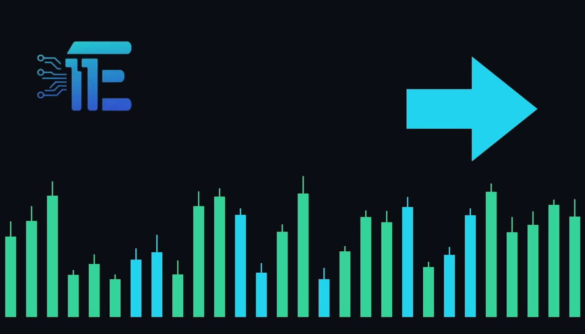

China October Wholesale Inflation Hits 5.7% as Consumer Measure Slowsអតិផរណាថ្លៃលក់ដុំរបស់ចិនឡើងដល់ 5.7% ខណៈរង្វាស់ថ្លៃទំនិញប្រើប្រាស់បានថយចុះ
XAU/USD impact: ◆ Mixedផលប៉ះពាល់លើ XAU/USD: ◆ ចម្រុះ

China's October PPI reached a four-year high of 5.7%, exceeding expectations while consumer inflation cooled. The diverging price trends could impact global inflation pressures and physical gold demand.
សន្ទស្សន៍ PPI ខែតុលារបស់ចិនបានកើនឡើងដល់កម្រិតខ្ពស់បំផុតក្នុងរយៈពេលជាង 4 ឆ្នាំគឺ 5.7% ដោយលើសពីការរំពឹងទុក ខណៈដែលអតិផរណាថ្លៃទំនិញប្រើប្រាស់បានថយចុះ។ និន្នាការថ្លៃខុសគ្នានេះអាចជះឥទ្ធិពលលើសម្ពាធអតិផរណាសកល និងតម្រូវការមាស។
China's wholesale inflation accelerated to its fastest pace in more than four years during October, with the Producer Price Index (PPI) climbing to 5.7%. The actual reading surpassed the 5.3% consensus projection compiled by a Reuters survey of economists. In contrast to surging factory-gate prices, the country's consumer measure of inflation slowed over the same period.
អតិផរណាថ្លៃលក់ដុំរបស់ប្រទេសចិនបានកើនឡើងក្នុងល្បឿនលឿនបំផុតក្នុងរយៈពេលជាង 4 ឆ្នាំនៅក្នុងខែតុលា ដោយសន្ទស្សន៍ថ្លៃផលិតករ (PPI) បានកើនឡើងដល់ 5.7%។ តួលេខជាក់ស្តែងនេះបានកើនលើសពីការព្យាករ 5.3% ពីការស្ទង់មតិរបស់អ្នកសេដ្ឋកិច្ចដោយ Reuters។ ផ្ទុយពីការកើនឡើងថ្លៃទំនិញនៅមាត់ច្រកចេញពីរោងចក្រ រង្វាស់អតិផរណាថ្លៃទំនិញប្រើប្រាស់របស់ប្រទេសនេះបានថយចុះក្នុងអំឡុងពេលដូចគ្នានេះ។
For gold (XAU/USD) traders, wholesale price data from the world's second-largest economy transmits through multiple financial channels, primarily commodity demand, currency fluctuations, and international inflation expectations. High producer prices in China can signal persistent production expenses that may filter into export prices, potentially sustaining global inflation and altering broader monetary expectations.
សម្រាប់អ្នកជួញដូរមាស (XAU/USD) ទិន្នន័យថ្លៃលក់ដុំពីប្រទេសដែលមានសេដ្ឋកិច្ចធំជាងគេទីពីរលើពិភពលោកនេះ បានឆ្លងកាត់បណ្តាញហិរញ្ញវត្ថុជាច្រើន ជាពិសេសតាមរយៈតម្រូវការទំនិញ ភាពប្រែប្រួលនៃរូបិយប័ណ្ណ និងការរំពឹងទុកអតិផរណាជាអន្តរជាតិ។ ថ្លៃផលិតករខ្ពស់នៅក្នុងប្រទេសចិនអាចបង្ហាញពីការចំណាយលើការផលិតជាប់រហូត ដែលអាចរុញច្រានថ្លៃទំនិញនាំចេញ និងអាចទ្រទ្រង់អតិផរណាសកល ព្រមទាំងកែប្រែការរំពឹងទុកលើគោលនយោបាយរូបិយវត្ថុទូលំទូលាយ។
At the same time, the divergence between accelerating factory costs and slowing consumer inflation highlights uneven domestic economic momentum. Slower consumer price growth suggests that retail demand remains subdued, preventing manufacturers from easily passing on higher wholesale costs to households. This dynamic can influence the Chinese yuan against the US dollar, which often ripples into physical gold buying trends across Asian markets.
ទន្ទឹមនឹងនេះ ភាពខុសគ្នារវាងការកើនឡើងថ្លៃដើមរោងចក្រ និងការថយចុះនៃអតិផរណាថ្លៃទំនិញប្រើប្រាស់ បានបង្ហាញពីសន្ទុះសេដ្ឋកិច្ចក្នុងស្រុកដែលមិនស្មើគ្នា។ ការកើនឡើងយឺតនៃថ្លៃទំនិញប្រើប្រាស់បង្ហាញថាតម្រូវការលក់រាយនៅតែមានកម្រិតទាប ដែលធ្វើឱ្យរោងចក្រផលិតពិបាកក្នុងការរុញបន្ទុកថ្លៃលក់ដុំខ្ពស់ទៅកាន់អ្នកប្រើប្រាស់។ ស្ថានភាពនេះអាចជះឥទ្ធិពលដល់ប្រាក់យ័នចិនធៀបនឹងដុល្លារអាមេរិក ដែលតែងតែជះឥទ្ធិពលដល់និន្នាការទិញមាសជាក់ស្តែងនៅទូទាំងទីផ្សារអាស៊ី។
Under an upside scenario, persistent wholesale price gains could reinforce gold's role as a traditional inflation hedge, especially if rising industrial costs prompt heightened demand for tangible assets or stoke broader price pressures internationally. Conversely, if cooling consumer figures signal softening final demand and restrain economic expansion, the US dollar could strengthen against Asian currencies, thereby creating headwinds for dollar-denominated gold bullion.
នៅក្នុងសេណារីយ៉ូវិជ្ជមាន ការបន្តកើនឡើងនៃថ្លៃលក់ដុំអាចពង្រឹងតួនាទីរបស់មាសជាទ្រព្យការពារហានិភ័យអតិផរណា ប្រសិនបើការកើនឡើងថ្លៃដើមឧស្សាហកម្មជំរុញឱ្យមានតម្រូវការកាន់តែខ្លាំងសម្រាប់ទ្រព្យសុវត្ថិភាព ឬបង្កើនសម្ពាធថ្លៃទំនិញជាអន្តរជាតិ។ ផ្ទុយទៅវិញ ប្រសិនបើតួលេខទំនិញប្រើប្រាស់ចុះត្រជាក់បង្ហាញពីការចុះខ្សោយនៃតម្រូវការចុងក្រោយ និងបន្ទច់បង្អាក់កំណើនសេដ្ឋកិច្ច ដុល្លារអាមេរិកអាចនឹងឡើងថ្លៃធៀបនឹងរូបិយប័ណ្ណអាស៊ី ដែលបង្កើតជាសម្ពាធធ្លាក់ចុះសម្រាប់មាសដែលគិតជាដុល្លារ។
Looking ahead, market participants will closely evaluate subsequent inflation updates and official policy responses to determine whether factory price increases persist or begin to normalize. Traders will also monitor how currency valuations and manufacturing output adjust to this gap between wholesale inflation and consumer price metrics.
ទៅមុខទៀត អ្នកចូលរួមក្នុងទីផ្សារនឹងតាមដានយ៉ាងដិតដល់នូវទិន្នន័យអតិផរណាបន្ទាប់ និងការឆ្លើយតបគោលនយោបាយផ្លូវការ ដើម្បីកំណត់ថាតើការកើនឡើងថ្លៃទំនិញរោងចក្រនឹងបន្ត ឬចាប់ផ្តើមវិលមករកប្រក្រតីភាពវិញ។ អ្នកជួញដូរក៏នឹងតាមដានផងដែរថាតើតម្លៃរូបិយប័ណ្ណ និងទិន្នផលផលិតកម្មកែសម្រួលយ៉ាងដូចម្តេចចំពោះគម្លាតរវាងអតិផរណាថ្លៃលក់ដុំ និងរង្វាស់ថ្លៃទំនិញប្រើប្រាស់នេះ។
Key takeawaysចំណុចសំខាន់ៗ
- China's October PPI jumped to 5.7%, beating the 5.3% Reuters forecast and marking a four-year peak.
- សន្ទស្សន៍ PPI ខែតុលារបស់ចិនបានហក់ឡើងដល់ 5.7% ដោយយកឈ្នះលើការព្យាករ 5.3% របស់ Reuters និងឈានដល់កម្រិតខ្ពស់បំផុតក្នុងរយៈពេល 4 ឆ្នាំ។
- Consumer inflation decelerated over the same timeframe, demonstrating diverging wholesale and consumer price dynamics.
- អតិផរណាថ្លៃទំនិញប្រើប្រាស់បានថយចុះក្នុងអំឡុងពេលដូចគ្នា ដែលបង្ហាញពីភាពផ្ទុយគ្នារវាងថ្លៃលក់ដុំ និងថ្លៃទំនិញប្រើប្រាស់។
- The widening gap influences global inflation outlooks, currency movements against the US dollar, and bullion demand.
- គម្លាតដែលកាន់តែរីកធំនេះជះឥទ្ធិពលលើទស្សនវិស័យអតិផរណាសកល ចលនារូបិយប័ណ្ណធៀបនឹងដុល្លារអាមេរិក និងតម្រូវការមាសដុំ។
Original commentary by THE MARKET CODE, based on public reporting from Economy. Written with the help of AI. Educational only, not financial advice.
មតិវិភាគដើមដោយ THE MARKET CODE ផ្អែកលើការរាយការណ៍សាធារណៈពី Economy។ សរសេរដោយមានជំនួយពី AI។ មាតិកាអប់រំប៉ុណ្ណោះ មិនមែនជាដំបូន្មានហិរញ្ញវត្ថុទេ។